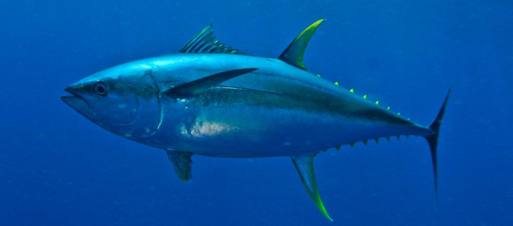

The magnificent Tuna Fish
The yellowfin tuna is a species you'll find in canned tuna, and may be called Chunk Light tuna. These tuna are often caught in a purse seine net, which faced an outcry in the U.S. for its effects on dolphins, which are often associated with schools of tuna, and were therefore captured along with the tuna, causing the deaths of hundreds of thousands of dolphins each year. Recent improvements in the fishery have reduced the dolphin bycatch. The yellowfin tuna often has a yellow stripe on its side, and its second dorsal fins and anal fins are long and yellow. Their maximum length is 7.8 feet and weight is 440 pounds. Yellowfin tuna prefer warmer, tropical to subtropical waters. This fish has a relatively short lifespan of 6-7 years.
The tuna is a sleek and streamlined fish, adapted for speed. It has two closely spaced dorsal fins on its back; The first is "depressible" – it can be laid down, flush, in a groove that runs along its back. Seven to ten yellow finlets run from the dorsal fins to the tail, which is lunate – curved like a crescent moon – and tapered to pointy tips. The caudal peduncle, to which the tail is attached, is quite thin, with three stabilizing horizontal keels on each side. The tuna's dorsal side is generally a metallic dark blue, while the ventral side, or underside, is silvery or whitish.
Physiology: Thunnus are widely but sparsely distributed throughout the oceans of the world, generally in tropical and temperate waters at latitudes ranging between about 45° north and south of the equator.[39] All tunas are able to maintain the temperature of certain parts of their body above the temperature of ambient seawater. For example, bluefin can maintain a core body temperature of 25–33 °C (77–91 °F), in water as cold as 6 °C (43 °F). However, unlike "typical" endothermic creatures such as mammals and birds, tuna do not maintain temperature within a relatively narrow range.[40][41]
Tunas achieve endothermy by conserving the heat generated through normal metabolism. In all tunas, the heart operates at ambient temperature, as it receives cooled blood, and coronary circulation is directly from the gills.[42] The rete mirabile ("wonderful net"), the intertwining of veins and arteries in the body's periphery, allows nearly all of the metabolic heat from venous blood to be "re-claimed" and transferred to the arterial blood via a counter-current exchange system, thus mitigating the effects of surface cooling.[43] This allows the tuna to elevate the temperatures of the highly-aerobic tissues of the skeletal muscles, eyes and brain,[40][42] which supports faster swimming speeds and reduced energy expenditure, and which enables them to survive in cooler waters over a wider range of ocean environments than those of other fish. Also unlike most fish, which have white flesh, the muscle tissue of tuna ranges from pink to dark red. The red myotomal muscles derive their color from myoglobin, an oxygen-binding molecule, which tuna express in quantities far higher than most other fish. The oxygen-rich blood further enables energy delivery to their muscles. For powerful swimming animals like dolphins and tuna, cavitation may be detrimental, because it limits their maximum swimming speed.[44] Even if they have the power to swim faster, dolphins may have to restrict their speed, because collapsing cavitation bubbles on their tail are too painful. Cavitation also slows tuna, but for a different reason. Unlike dolphins, these fish do not feel the bubbles, because they have bony fins without nerve endings. Nevertheless, they cannot swim faster because the cavitation bubbles create a vapor film around their fins that limits their speed. Lesions have been found on tuna that are consistent with cavitation damage.
Fishing industry; bar chart that states Thunnus thynnus is the largest tuna, at 458 centimetres (180 in) followed by Thunnus orientalis at 300 centimetres (120 in), Thunnus obsesus at 250 centimetres (98 in), Gymnosarda unicolor at 248 centimetres (98 in), Thunnus maccoyii at 245 centimetres (96 in), Thunnus albacares at 239 centimetres (94 in), Gasterochisma melampus at 164 centimetres (65 in), Thunnus tonggol at 145 centimetres (57 in), Thunnus alalunga at 140 centimetres (55 in), Euthynnus alletteratus at 122 centimetres (48 in), Katsuwonus pelamis at 108 centimetres (43 in), Thunnus atlanticus at 108 centimetres (43 in), Allothunnus fallai at 105 centimetres (41 in), Euthynnus affinis at 100 centimetres (39 in), Auxis thazard thazard at 65 centimetres (26 in),Auxis rochei rochei at 50 centimetres (20 in), and Auxis rochei eudorax at 36.5 centimetres (14.4 in) Maximum reported sizes of tuna species
Commercial fishing: Tuna is an important commercial fish. The International Seafood Sustainability Foundation (ISSF) compiled a detailed scientific report on the state of global tuna stocks in 2009, which includes regular updates. According to the ISSF, the most important species for commercial and recreational tuna fisheries are yellowfin (Thunnus albacares), bigeye (T. obesus), bluefin (T. thynnus, T. orientalis, and T. macoyii), albacore (T. alalunga), and skipjack.
The report further states: Between 1940 and the mid-1960s, the annual world catch of the five principal market species of tunas rose from about 300 thousand tons to about 1 million tons, most of it taken by hook and line. With the development of purse-seine nets, now the predominant gear, catches have risen to more than 4 million tons annually during the last few years. Of these catches, about 68 percent are from the Pacific Ocean, 22 percent from the Indian Ocean, and the remaining 10 percent from the Atlantic Ocean and the Mediterranean Sea. Skipjack makes up about 60 percent of the catch, followed by yellowfin (24 percent), bigeye (10 percent), albacore (5 percent), and bluefin the remainder. Purse-seines take about 62 percent of the world production, longline about 14 percent, pole and line about 11 percent, and a variety of other gears the remainder. The Australian government alleged in 2006 that Japan had illegally overfished southern bluefin by taking 12,000 to 20,000 tonnes per year instead of the agreed upon 6,000 tonnes; the value of such overfishing would be as much as US$2 billion. Such overfishing has severely damaged bluefin stocks.[46] According to the WWF, "Japan's huge appetite for tuna will take the most sought-after stocks to the brink of commercial extinction unless fisheries agree on more rigid quotas".[47] Japan's Fisheries Research Agency counters that Australian and New Zealand tuna fishing companies under-report their total catches of southern bluefin tuna and ignore internationally mandated total allowable catch totals. In recent years, opening day fish auctions at Tokyo's Tsukiji fish market have seen record-setting prices for bluefin tuna, reflecting market demand. In each of 2010, 2011, 2012 and 2013, new record prices have been set for a single fish – the current record is 155.4 million japanese yen (US $1.76 million) for a 221 kg (487 lb) bluefin, or a unit price of JP¥ 703,167/kg (US$3,603/lb). The opening auction price for 2014 plummeted to less than 5% of the previous year's price, which had drawn complaints for climbing "way out of line".[49] A summary of record-setting auctions are shown in the following table (highlighted values indicate new world records).